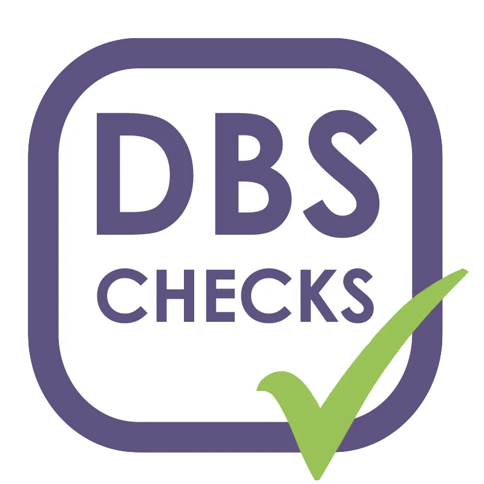

“We have worked with Applewood for several years and have consistently been impressed by the quality of their work, professionalism and reliability. They are always responsive, proactive in their approach and committed to delivering a high standard of service. Their attention to detail, excellent communication and ability to meet deadlines have made them a valued partner to us. We would have no hesitation in recommending them and look forward to continuing our successful working relationship.”Stephanie BProject Quantity Surveyor

Fencing · Groundworks · Brickwork
The Capability of a Large Contractor. The Service of a Family Business.
Applewood Construction Kent Limited is a family-run contractor based in Ashford, delivering reactive repairs, minor works, disrepair works and major works projects across the South East.
23Skilled operatives across site works, planning and supervision
400+Live works in progress managed on large housing provider contracts
10+ yrsCity of London Corporation estate experience, direct and via property maintenance companies
60+Weekly completions achievable on high-volume programmes when fully mobilised
Trusted by housing providers, councils and principal contractors


Trusted by clients
What people say about us.
Professionalism, reliability and workmanship recognised by housing providers, councils and residents.
Who they are
Ashford-based, family-run and built around accountable delivery.
Applewood Construction covers all aspects of fencing, groundworks and brickwork, supporting property maintenance companies, local authorities, housing providers and commercial organisations.
Every job is controlled through a practical delivery model: in-house planners, surveyors, supervisors, yard operatives and site operatives working exclusively for Applewood, Monday to Friday.

Controlled estate worksClear planning, safe delivery and documented completion.
What they do
Core trades delivered with the systems clients need.
From first-time-fix repairs through to multi-week programmes, Applewood provides the trade skill, supervision, resident coordination and reporting needed for occupied and public-sector environments.

Fencing
All aspects of Timber Fencing, including Picket Fencing, Panels, Closeboard Fencing, and Gates, as well as Metal Railings and Estate Boundary Works.
View fencingGroundworks
Paving, Paths, Drainage-Related Works, Concrete, External Surfaces, and Small Civil Works.
View groundworks
Brickwork
Boundary Walls, Retaining Structures, Piers, Steps, Masonry Repairs, and Associated Estate Works.
View brickwork
Key selling points
A contractor set up for occupied properties and repeat workstreams.
The strength of Applewood is not only the trade work. It is the structure around the work — inspection, planning, materials, delivery, supervision and completion reporting.
Skilled operatives
23 operatives working exclusively for Applewood across fencing, groundworks and brickwork.
In-house planning
Office staff managing enquiries, quotes, bookings, invoicing and works in progress.
Surveyor control
Inspections, post-inspections and random PPE and compliance checks by supervisors.
Stock yard support
Yard operatives source materials and manage stock before operatives attend site.
Tracked fleet
Euro-6 compliant vehicles, GPS tracked and monitored for operational control.
Accreditations
Approved, compliant and ready for contractor environments.
Applewood holds recognised accreditations and registrations suitable for construction, public-sector and housing provider workstreams.
Accreditations & registrations
Constructionline Gold, CHAS, DBS, Environment Agency, CITB and ULEZ / Euro-6 fleet compliance.



Experience & scale
Practical delivery across reactive repairs, planned works and larger packages.
Applewood supports clients across works ranging from £50 first-time-fix reactive repairs through to projects up to £80k.
For London & Quadrant Housing Trust, Applewood manages reactive repairs, minor works, disrepair works and planned preventative maintenance, with a WIP of 400+ jobs at any one time.
- Day-to-day reactive repairs and emergency jobs.
- Damp and mould complaints and disrepair works.
- Minor and Major works projects across occupied estates.

Contract enquiries
Need a dependable contractor for external works?
Speak to Applewood about fencing, groundworks, brickwork, reactive repairs, disrepair or planned works across the South East.